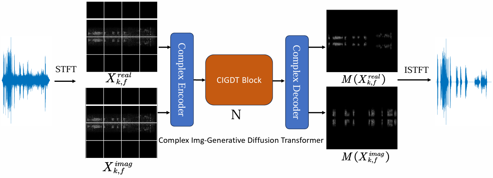

Abstract. The audio denoising technique has captured widespread attention in the deep neural network field. Recently, the audio denoising problem has been converted into an image generation task, and deep learning-based approaches have been applied to tackle this problem. However, its performance is still limited, leaving room for further improvement. In order to enhance audio denoising performance, this paper introduces a complex image-generative diffusion transformer that captures more information from the complex Fourier domain. We explore a novel diffusion transformer by integrating the transformer with a diffusion model. Our proposed model demonstrates the scalability of the transformer and expands the receptive field of sparse attention using attention diffusion. Our work is among the first to utilize diffusion transformers to deal with the image generation task for audio denoising. Extensive experiments on two benchmark datasets demonstrate that our proposed model outperforms SOTA models.

A overall progress of our proposed CIGDTN model. Different modules are marked with different color blocks. The architecture of the main body fuses diffusion transformers (DiTs) architecture and sparse attention diffusion.
We show the original natural language caption and the corresponding structured caption of Make-An-Audio 2. And we compare the audio generated by Make-An-Audio 2 to prior T2A works.
| Input | Ground-truth | Make-An-Audio 2 | Make-An-Audio | Audio-LDM | TANGO |
|---|---|---|---|---|---|
Trained with variable length data and with the design of 1D-convlution VAE and feed-forward Transformer-based diffusion backbone, Make-An-Audio 2 can generate audios of variable-length without performance dropping.
| Input | Make-An-Audio 2 | Make-An-Audio | AudioLDM | TANGO |
|---|---|---|---|---|
Due to the ambiguity of natural language, the time period when some sound events occur may not be clearly described, and we can provide more precise temporal control by modifying the order in the structured input.
| Origin Input | Structured Input | Generated Audio | Structured Input | Generated Audio |
|---|---|---|---|---|
| Wind blowing followed by people speaking then a loud burst of thunder | <wind blowing& all>@<people speaking& mid>@<thunder& end> | <wind blowing& start>@<people speaking& mid>@<thunder& end> | ||
| A train running on railroad tracks followed by a train horn blowing and steam hissing | <train running on railroad tracks& all>@<train horn blowing& end>@<steam hissing& end> | <train running on railroad tracks& all>@<train horn blowing& mid>@<steam hissing& end> | ||
| Winds and ocean waves crashing while a chime instrument briefly plays a melody | <winds& all>@<ocean waves crashing& all>@<chime instrument melody& all> | <winds& all>@<ocean waves crashing& all>@<chime instrument melody& mid> | ||
| Constant faint humming and a few light knocks | <constant faint humming & all>@<a few light knocks & end> | <constant faint humming & all>@<a few light knocks & start> |
When LLM parsing the original natural language input, some adjective or quantifier may be lost, and sometimes the structured inputs' format is incorrect. Dual text encoders can avoid information loss and are more robust in these situations.
| Origin Input | Wrongly Structured Input | Dual text encoders | Only structured text encoder |
|---|---|---|---|
| A strong torrent of rain is audible outside of a window | <strong>Sound of strong torrent of rain outside window & all</strong> | ||
| A motorcycle revving by quickly twice | <motorcycle revving & all>@<quickly twice & end></quickly> | ||
| A car moves quickly and is followed by someone walking and other cars | <car engine revving & start>@<car tires screeching & mid>@<footsteps running & mid>@<other car engines & mid to end> | ||
| A metallic swirling and scraping that gets louder and more irregular | <metallic swirling and scraping & all, getting louder and more irregular>@ | ||
| A gusting wind with waves crashing in the background from time to time | <gusting wind & all>@<waves crashing & random intervals> |
We believe that our T2A work on temporal enhancement can serve as an important stepping stone for future work on generating semantically aligned and temporally consistent audio.
And our approach of constructing complex audio and enhancing the data based on LLM can provide inspiration for future work.
At the same time, we acknowledge that Make-An-Audio 2 may lead to unintended consequences such as increased unemployment for individuals in related fields such as sound engineering and radio hosting. Furthermore, there are potential concerns regarding the ethics of non-consensual voice cloning or the creation of fake media.